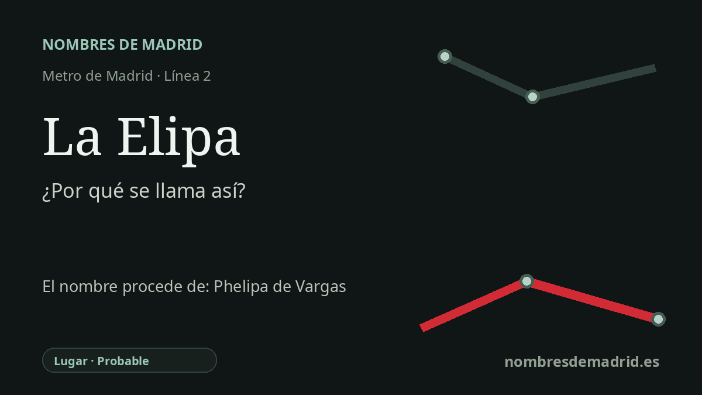

Publicado el · Investigación de Nombres de Madrid · Cómo verificamos cada origen · 9 fuentes consultadas
Respuesta rápida
La estación de La Elipa toma su nombre de la zona madrileña de La Elipa, en torno a Marqués de Corbera. El topónimo es antiguo: aparece como Helipa/Elipa en documentos patrimoniales de época moderna y se explica tradicionalmente como recuerdo de Phelipa de Vargas, aunque ese último paso es probable más que plenamente probado con las fuentes primarias accesibles.
La historia del nombre
La estación de La Elipa toma su nombre de la zona de La Elipa, en torno a la avenida del Marqués de Corbera, dentro del distrito madrileño de Ciudad Lineal. El nombre ya pertenecía al lugar antes de que llegara el Metro: el Consorcio Regional de Transportes identifica la estación como La Elipa en la línea 2, y la documentación municipal de Madrid trata La Elipa como el ámbito de barrio al que sirve la parada.
Detrás del barrio actual hay un topónimo rural mucho más antiguo. La pista documental accesible más clara apunta a una heredad llamada Helipa o Elipa: una obra biográfica del siglo XVIII de José Antonio Álvarez y Baena, al citar un mayorazgo fundado en 1510 por Diego de Luján, enumera “la heredad de la Helipa, hoy Elipa” entre los bienes de la familia Vargas-Luján. Eso da al nombre una profundidad histórica mayor que la del barrio de viviendas de los años cincuenta que después hizo reconocible La Elipa como zona urbana.
La explicación tradicional afirma que el nombre de la heredad procedía de Phelipa o Felipa de Vargas, esposa de Miguel Ximénez de Luján, y que Phelipa terminó evolucionando hacia La Elipa. Esta versión aparece en historias locales y referencias de toponimia madrileña, pero la documentación accesible no tiene la misma fuerza en todos los pasos: confirma mejor la existencia de la antigua heredad Helipa/Elipa y su relación con el patrimonio Vargas-Luján que el acto concreto de Miguel nombrando las tierras por su mujer.
El barrio contemporáneo se formó sobre todo en las décadas de 1950 y 1960. El Plan de Barrio del Ayuntamiento señala que el territorio pertenecía a comienzos del siglo XIX al término de Vicálvaro, anexionado a Madrid en 1951, y que el núcleo urbano moderno de La Elipa nació con el Plan Parcial de 1957, ligado a políticas de vivienda social. Por eso el nombre de la estación concentra dos historias: una antigua heredad rural y un barrio popular del Madrid del siglo XX.
El Metro llegó a La Elipa el 16 de febrero de 2007, después de una larga reivindicación vecinal. Fue cabecera oriental de la línea 2 hasta el 16 de marzo de 2011, cuando la línea se prolongó hacia Las Rosas. La interpretación mejor respaldada es que la estación toma el nombre de la zona de La Elipa, cuyo topónimo antiguo probablemente está relacionado con Phelipa de Vargas; presentar ese origen personal como plenamente verificado excedería las pruebas disponibles.